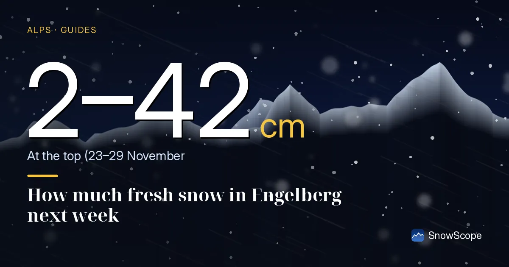
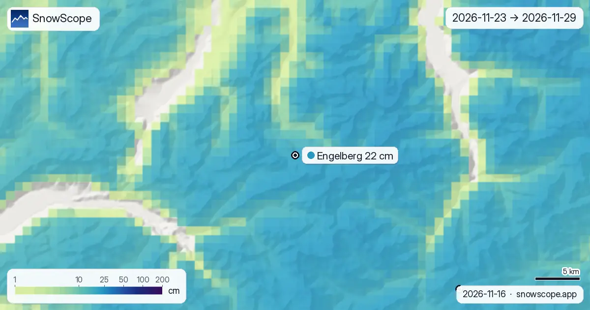
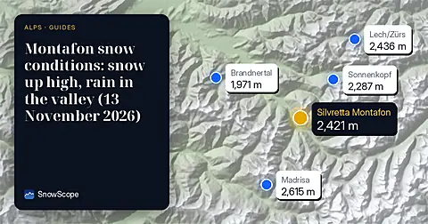

How much fresh snow in Engelberg next week: 2–42 cm at the top (23–29 November)
Next week's snow numbers for Engelberg: 22 cm at the top, 20 cm at mid-mountain, 7 cm at the base, all as the middle of a range for 23–29 November. The top's range runs from 2 to 42 cm, which says as much as the middle value does.
See the live snow forecast for Engelberg in the SnowScope appSnow depth, powder alerts and the 3D map, free.

Next week, height by height
Our forecast splits Engelberg's week like this: upper slopes 22 cm (low 2, high 42), middle of the mountain 20 cm, lower runs 7 cm (low 1, high 14).
Most of the total arrives on Monday 23 (4 cm, up to 8), Wednesday 25 (3 cm, up to 6), Thursday 26 (5 cm, up to 11), Saturday 28 (3 cm, up to 6) and Sunday 29 (4 cm, up to 8), counted at the top as the middle of our forecast and the high case.
Engelberg against its neighbours
Same week, same measure (top of each resort): Andermatt (24 km away) 21 cm; Laax (63 km away) 21 cm; Saas-Fee (86 km away) 22 cm. Engelberg itself: 22 cm.
The differences are small: the storm covers this whole corner of the Alps evenly, so pick on terrain and lifts, not on the snow total.
Where the snow line sits
A tale of two heights: 22 cm up high, 7 cm near 1100 m. Expect the snow line to hover above the lowest lifts, with grey, wet days in the village while the summits whiten.
Engelberg sits right on the northern edge of the Alps, which is why the north-west storms hit it hard.
First, this week's snow
This week is the heavy one: 42 cm at the top between 17 and 20 November (range 33–52 cm), 0 cm at the base. Next week's snow falls onto that, which matters more than the size of the second round.
Best day, best slopes
Thursday 26 November brings the most, 5 cm at the top and 11 cm at best: enough to soften the pistes, not enough for a powder day.
Go high: depth is safest on the Titlis glacier, and the best skiing should be on the steep north side of Titlis and the Laub, one of the Alps' great freeride faces. Treat the village and Gerschnialp as the weak point.
What could change
Not very. The high case gives 42 cm up top, the low case just 2 cm, so whether Engelberg gets a real fall depends on a storm track that is still undecided.
Book flexibly if you can: the picture for Engelberg will be much sharper by the weekend.
Tips for skiers
- Off the groomed runs, new snow means new avalanche risk: the Swiss avalanche bulletin is the reference.
- Check the resort's own opening date and lift status: snow on the mountain does not mean lifts are running.
- Pack for wet weather in the village: the 7 cm at the base hides a lot of rain.
More maps (external sites)
About these numbers
Snow numbers: our two-week snow forecast issued on 16 November 2026, read at three heights of the resort (top, mid-mountain, base). Each total is the middle of a range, with a low and a high case. These are estimates for the slopes, not resort measurements, and forecasts move from day to day: check the live map before you go.
Cite this report
For research, teaching or the press: the numbers and charts are free to reuse under CC BY 4.0 with this citation.
SnowScope (2026), How much fresh snow in Engelberg next week: 2–42 cm at the top (23–29 November), https://snowscope.app/blog/en/2026/11/engelberg-snow-forecast-next-week-23-29-november-2026.html, accessed 2026-11-16
SnowScope (Atlas Labs). (2026, November 16). How much fresh snow in Engelberg next week: 2–42 cm at the top (23–29 November). SnowScope snow reports. https://snowscope.app/blog/en/2026/11/engelberg-snow-forecast-next-week-23-29-november-2026.html
BibTeX
@misc{snowscope2026engelbergsnowforecastnex,
author = {{SnowScope (Atlas Labs)}},
title = {How much fresh snow in Engelberg next week: 2–42 cm at the top (23–29 November)},
year = {2026},
month = nov,
howpublished = {\url{https://snowscope.app/blog/en/2026/11/engelberg-snow-forecast-next-week-23-29-november-2026.html}},
note = {Published 2026-11-16 11:35 UTC; accessed 2026-11-16}
}· CC BY 4.0 · Methods, data and tools →
Engelberg: snow and temperature by height, this winter vs last (tools) →
Follow Engelberg
Free: a message when fresh snow is coming, and the forecast every morning.
More snow reports

The Sillian (Hochpustertal) ski map with our snow layer on 13 November 2026: 8.6 cm on the top at 2399 m, bare lower slopes, and a week of mixed rain and snow with the snow line near 1,800 to 2,000 m.

Silvretta Montafon snow conditions on 13 November 2026: 4.5 cm on the top at 2421 m, bare mid-mountain and valley, about 40 cm on the way up high this week while the valley gets rain below 1,500 m.

Les Menuires snow report for 13 November 2026: 28 cm at the top (2838 m), none lying at 2112 m or 1386 m. About 80 cm due at the top in seven days, snow line around 1500 to 1700 m. Why Val Thorens, 450 m higher up the same valley, already has more.